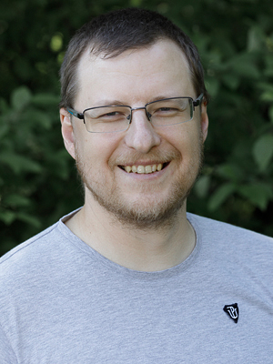

Prof. RNDr. Karel Berka, Ph.D.
Professor of Biomolecular Chemistry and Structural Biology
Leading research in computational chemistry, structural bioinformatics, and biomolecular simulation at Palacký University Olomouc. Creating advanced software and database platforms to decipher protein structures, channels, and small-molecule membrane transport.

ChemData Lab
Research group in computational chemistry, structural bioinformatics, and database development
Our Focus
The ChemData Lab at Palacký University Olomouc bridges chemical data science with biology and physics. We develop state-of-the-art tools and databases to study biomolecular systems, focusing on:
- Biomacromolecular Channels: Analyzing tunnels, pores, and gates in proteins (developers of MOLEonline [GitHub / Backup] and ChannelsDB [GitHub]).
- Membrane Simulations: Studying small-molecule interactions with phospholipid bilayers (developers of MolMeDB [GitHub]).
- Drug Design & Machine Learning: Applying deep learning to predict transport kinetics and molecular properties.
🎓 Thesis Opportunities (2026/2027)
We offer Bachelor, Master, and Ph.D. thesis topics for motivated students interested in computational chemistry, deep learning (PyTorch), and web service engineering:
- Predicting small-molecule membrane transport kinetics using deep learning.
- Geometric modeling of biomacromolecular channel gates in the AlphaFold Database.
- Development of interactive web visualizations for protein channel profiling.
Students gain hands-on experience with modern computational toolkits. Contact Karel Berka (karel.berka@upol.cz) or visit Office 3.009 for details.
Tools & Software Repositories
Open-source software tools, web platforms, and databases developed for structural bioinformatics
Teaching
I am actively involved in teaching at the Department of Physical Chemistry. My primary courses focus on computational chemistry, biomolecular simulations, and drug design.
For detailed information and teaching materials, visit the KFC Teaching Portal.
Key Collaborators
Working together with leading Czech and international research institutions
Prof. Jiří Vondrášek, CSc.
IOCB Prague
Researching protein structural properties, biomolecular simulations, and leading scientific nodes and data services within the ELIXIR-CZ national infrastructure.
- ELIXIR-CZ Infrastructure & Research - Biological Data Management
- J. Chem. Theory Comput. (2010) - Energy Matrix of Side-Chain Interactions
Prof. RNDr. Radka Svobodová, Ph.D.
CEITEC / Masaryk University, Brno
Co-development of software tools and databases for protein channel detection and visualization, including the MOLEonline and ChannelsDB platforms.
Prof. Ing. František Štěpánek, Ph.D.
UCT Prague (University of Chemistry and Technology)
Collaborating on chemical robotics and mathematical modeling of structured particles, focusing on the simulation and design of microscopic drug delivery systems ("chemical robots").
- Mol. Pharmaceutics (2023) - Prodrug Design for Liposomes
- Mol. Syst. Des. Eng. (2021) - Screening for Thermoresponsive Liposomes
RNDr. Marian Novotný, Ph.D.
Charles University, Prague
Joint development of the "Alphafoldology" concept and scientific collaboration on structural bioinformatics workflows and resource integration within ELIXIR CZ.
- Alphafoldology Catalog - Catalog of Structural Biology ML Tools
- ELIXIR-CZ Infrastructure - Scientific Collaboration & Workshops
Dr. David Sehnal, Ph.D.
CEITEC / Masaryk University, Brno
Collaborator on high-performance 3D visualization systems, bringing MolStar (Mol*) integration to MOLEonline and structural bioinformatics portals.
ELIXIR Europe & PDB Nodes
International Infrastructure
Integrating databases and calculation workflows with European platforms, ensuring structural biology data remains open and FAIR.
Publications & Bibliometrics
Scientific articles, books, preprints, and FAIRsharing records separated into clear chapters
Get in Touch
Reach out for academic collaborations, research queries, or student projects
Office & Laboratory Address
Department of Physical Chemistry
Faculty of Science, Palacký University Olomouc